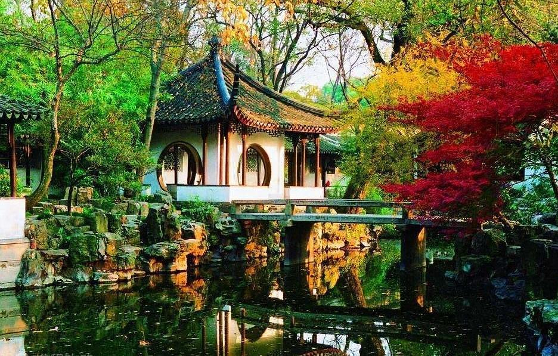
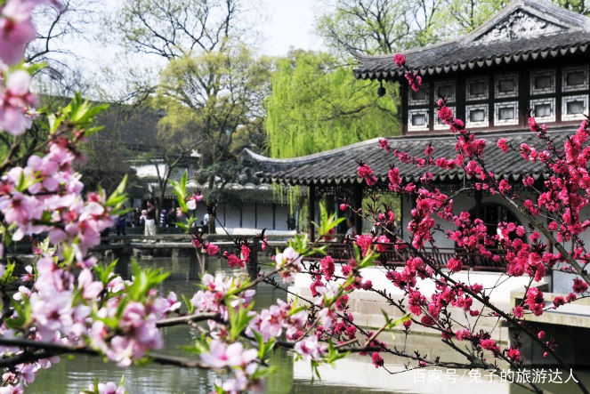

“咫尺之内再造乾坤”——苏州园林
苏州古典园林，亦称“苏州园林”，是位于江苏省苏州市境内的中国古典园林的总称。苏州古典园林溯源于春秋，发展于晋唐，繁荣于两宋，全盛于明清。苏州素有“园林之城”的美誉，境内私家园林始建于前6世纪，清末时城内外有园林170多处，现存50多处。
苏州古典园林宅园合一，可赏，可游，可居。这种建筑形态的形成，是在人口密集和缺乏自然风光的城市中，人类依恋自然、追求与自然和谐相处、美化和完善自身居住环境的一种创造。苏州古典园林所蕴涵的中华哲学、历史、人文习俗是江南人文历史传统、地方风俗的一种象征和浓缩，展现了中国文化的精华，在世界造园史上具有独特的历史地位和重大的艺术价值。以拙政园、留园为代表的苏州古典园林被誉为“咫尺之内再造乾坤”，是中华园林文化的翘楚和骄傲。
苏州古典园林是文化意蕴深厚的“文人写意山水园”。其建筑布局、结构、造型及风格，都巧妙地运用了对比、衬托、对景、借景以及尺度变换、层次配合和小中见大、以少胜多等种种造园艺术技巧和手法，将亭、台、楼、阁、泉、石、花、木组合在一起，在城市中创造出人与自然和谐的居住环境。构成了苏州古典园林的总体特色。苏州古典园林占地面积小，采用变换无穷、不拘一格的艺术手法，以中国山水花鸟的情趣，寓唐诗宋词的意境，在有限的空间内点缀假山、树木，安排亭台楼阁、池塘小桥，使苏州古典园林以景取胜，景因园异，给人以小中见大的艺术效果。

